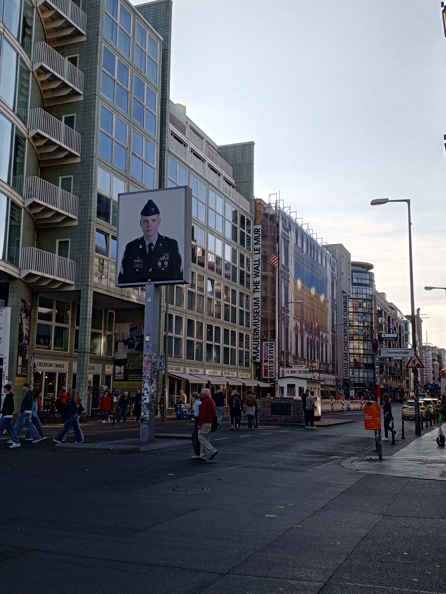
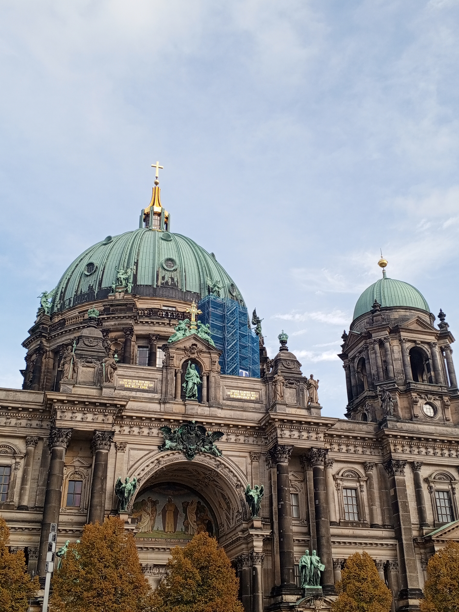
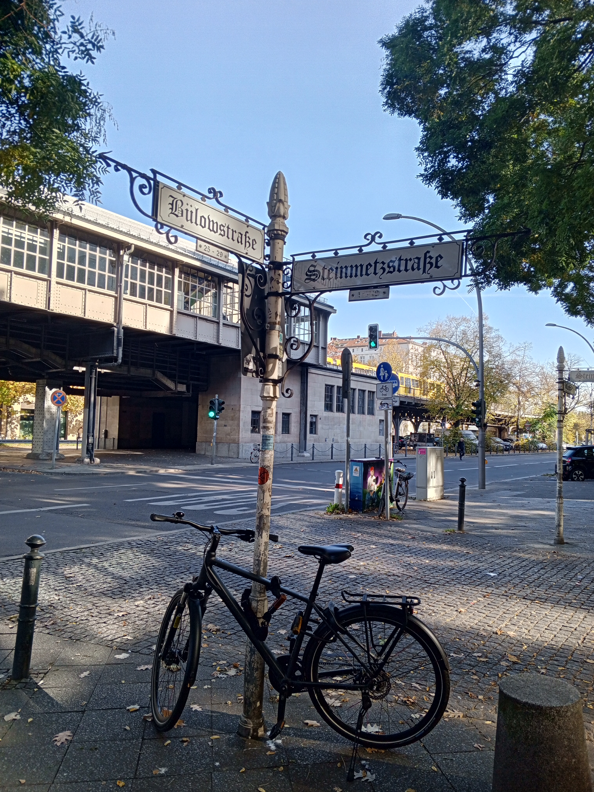
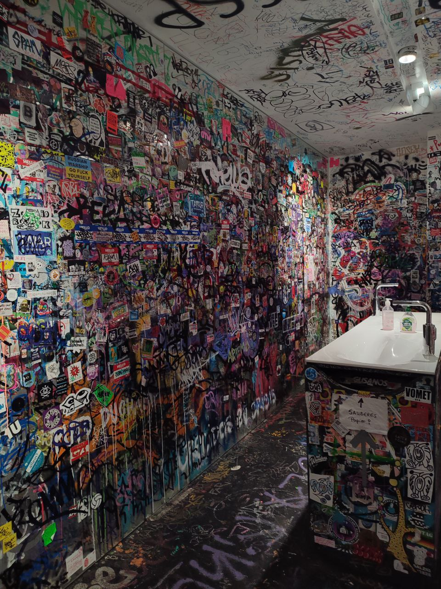
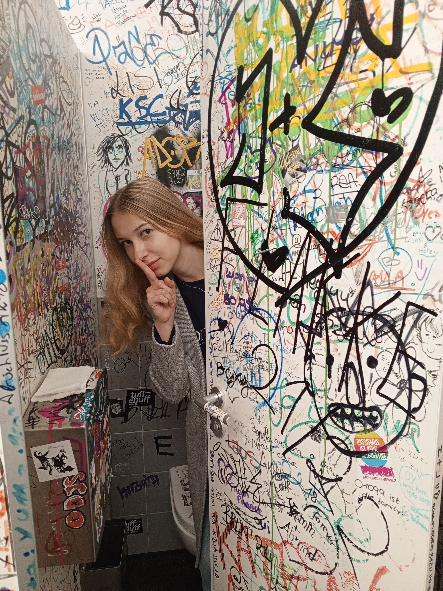
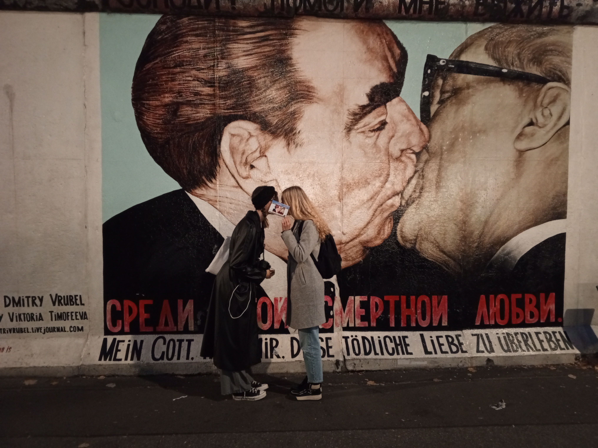
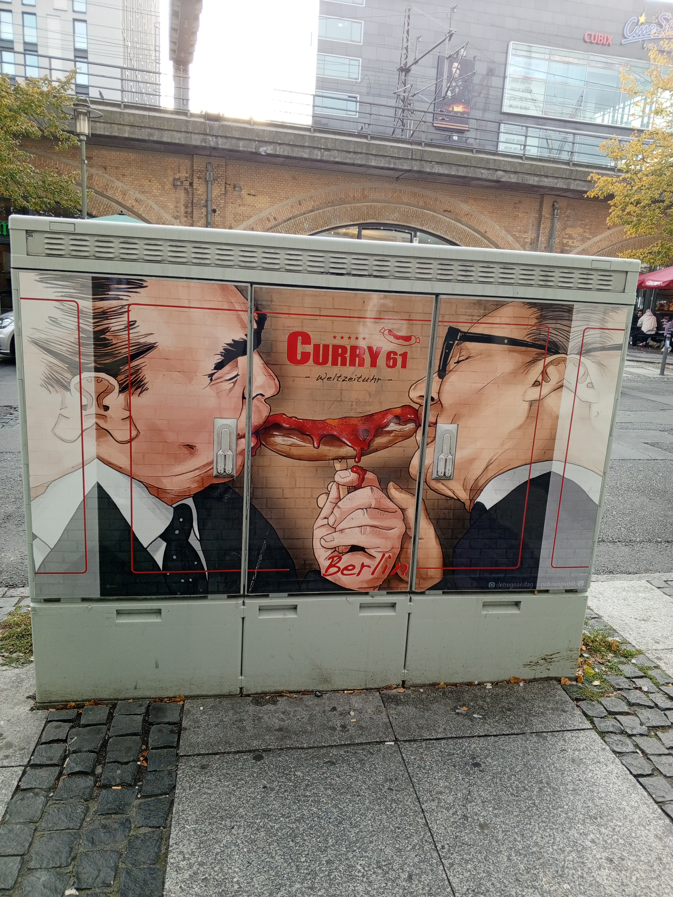
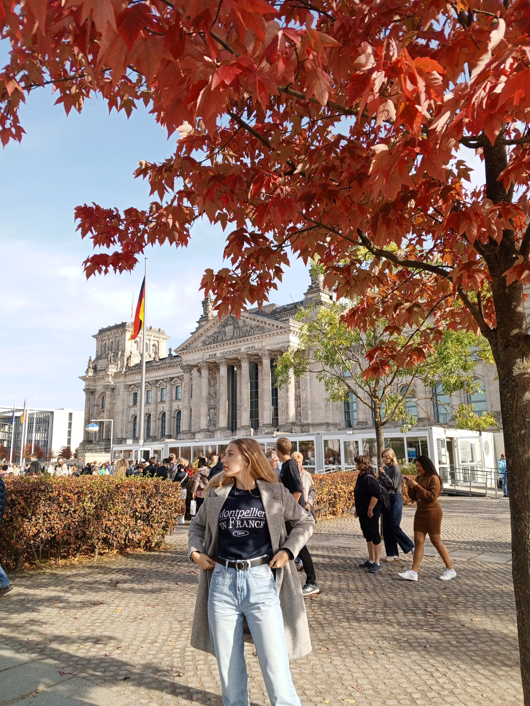
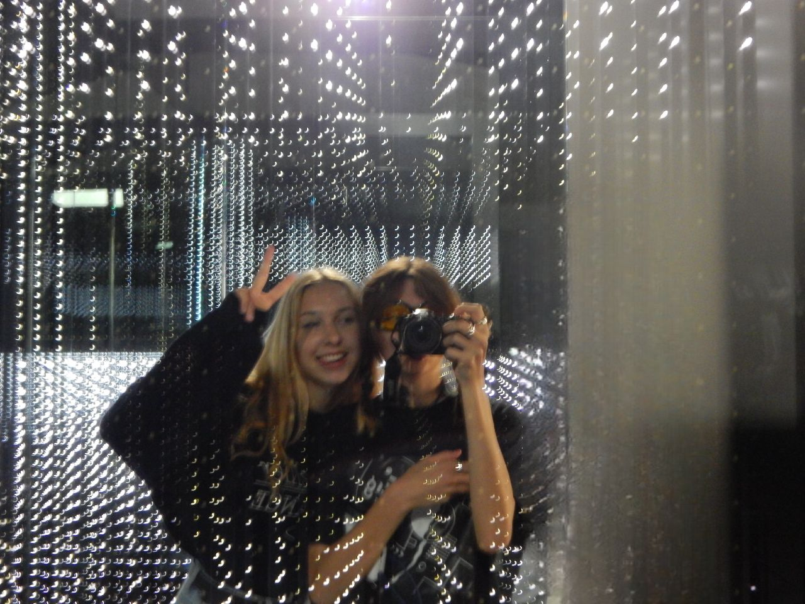

BERLIN
Miasto, które nauczyło mnie żyć

Stolica Niemiec
Odwiedzona: październik 2024
Berlin to był mój pierwszy bunt. Pierwsza podróż po rozpoczęciu
studiów, pierwsze wyjście poza bezpieczną strefę komfortu. To tutaj
przestałam być "grzeczną dziewczynką", która tylko się uczyła.
W Berlinie zrozumiałam, że życie to nie tylko oceny i plany, że chaos
może być piękny, a niedoskonałości mają swój urok, że czasem warto
zgubić się w obcym mieście, by odnaleźć siebie.
To miasto nauczyło mnie odwagi. Odwagi bycia sobą, mówienia "nie",
eksperymentowania. Berlin dał mi skrzydła, których wcześniej nie
miałam.
Moje ulubione kadry z Berlina













Graffiti na ścianach, muzykę z klubów, ludzi śmiejących się na
ulicach. Poczułam wtedy, że świat jest większy niż myślałam.
Berlin pokazał mi, że można być innym i to jest w porządku, że nie
muszę pasować do żadnych schematów, że moje życie to moja opowieść,
którą sama piszę. Dziś, gdy patrzę na zdjęcia z Berlina, widzę nie
tylko miasto. Widzę moment, w którym zaczęłam być naprawdę sobą.
Wszystkie zdjęcia:
Darya Masliak | sparke.design